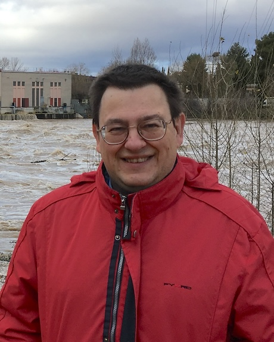
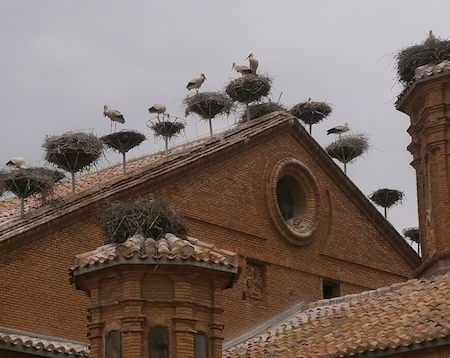

Juan Luis Varona
Dpto. de Matemáticas y Computación
Universidad de La Rioja (Logroño, España)

Bienvenido a la página WWW de Juan Luis Varona Malumbres. Ofrece información sobre mí, así como sobre aspectos relacionados con mi trabajo como matemático, mi investigación y temas de interés.
En esta página puedes conseguir bastantes de mis artículos de investigación y otras publicaciones.
Si, por el contrario, estás interesado en mi docencia universitaria, pulsa aquí.
Y aquí tienes mi dirección completa.
Información biográfica
Nací en Tudela (Navarra) en 1962, aunque por casualidad; puede decirse que soy de Alfaro (La Rioja), donde viví de pequeño. Me licencié en Matemáticas por la Universidad de Zaragoza en 1985, y leí la tesis doctoral (tex, pdf) en la Universidad de Cantabria en 1988, bajo la dirección del profesor José J. Guadalupe (Chicho). Soy Catedrático de Universidad en la Universidad de La Rioja.
En el Grado (antes Licenciatura) de Matemáticas de la Universidad de La Rioja he impartido clases de Análisis Matemático, Análisis Numérico, Ecuaciones Diferenciales, Matemática Discreta y Teoría de Números. Asimismo he sido profesor de distintas asignaturas de contenido matemático en grados de química, enología y empresariales, y en ingenierías informática, agrícola e industrial. También he impartido numerosos cursos de TeX/LaTeX.
He utilizado numerosos lenguajes de programación (algunos, hace ya tiempo; en otros sigo haciéndolo muy a menudo), sobre todo en temas relacionados con matemáticas o escritura, sobre todo Basic, Pascal, Fortran, C, C++, Wolfram (Mathematica), pari-gp, Python, tex, Lua y html. Todos los he aprendido de manera autodidacta.
He sido Director de La Gaceta de la Real Sociedad Matemática Española desde enero de 2007 hasta marzo de 2024.
Libros publicados o editados
Recorridos por la Teoría de Números
Animado por los años de experiencia impartiendo cursos de teoría de números, he escrito un libro sobre el tema. Se titula Recorridos por la Teoría de Números, tiene más de 700 páginas y ha sido copublicado por Electolibris y la Real Sociedad Matemática Española en su colección Textos Universitarios (segunda edición publicada en 2019).
Puedes encontrar más información, y descargar el libro, en esta página.
Métodos clásicos de resolución de ecuaciones diferenciales ordinarias
He escrito un libro sobre ecuaciones diferenciales titulado Métodos clásicos de resolución de ecuaciones diferenciales ordinarias, que ha editado el Servicio de Publicaciones de la Universidad de La Rioja en 1996 (ISBN: 84-88713-32-0). Puedes cogerlo aquí (o en Dialnet).
El libro estudia, tanto teóricamente como mediante ejemplos ilustrativos, los distintos métodos de resolución de ecuaciones diferenciales ordinarias. Permite, a la vista del aspecto de una ecuación, identificar fácilmente su tipo con el objetivo de encontrar sus soluciones. En archivos aparte, también está disponible lo que he denominado recetas, que es un resumen de los métodos tratados en el libro.
Margarita mathematica en memoria de José Javier (Chicho) Guadalupe Hernández
Inesperadamente, el 1 de abril de 2000 falleció (en un accidente de tráfico) nuestro compañero José Javier Guadalupe Hernández, habitualmente conocido como Chicho. La lamentable pérdida de Chicho Guadalupe nos ha impedido continuar nuestra colaboración científica en todos los temas en los que él nos introdujo. Pero, si cabe, echamos mucho más en falta su amistad y su afecto personal.
El Departamento de Matemáticas y Computación de la Universidad de La Rioja editó un libro en homenaje suyo (por interés histórico, ésta es la página con la convocatoria). Los editores del libro hemos sido Luis Español y el que escribe. El texto completo del libro se puede descargar en Dialnet.
Proceedings of the International Congress of Mathematicians, August 22-30, 2006, Madrid
Colaboré en la organización del Congreso Internacional de los Matemáticos ICM2006 (que se celebró en Madrid del 22 al 30 de agosto de 2006) como miembro del Comité de Publicaciones.
Junto con M. Sanz-Solé, J. Soria y J. Verdera, fui editor de los Proceedings of the International Congress of Mathematicians, publicados por la European Mathematical Society Publishing House, 2006 (Vol. II y III) y 2007 (Vol. I). Se pueden descargar en las páginas de EMS Press o en las de la International Mathematical Union.
Temas de investigación (publicaciones)
En todos los campos que cito a continuación, mi trabajo investigador ha quedado reflejado en artículos que se pueden descargar aquí.
Teoría de aproximación y análisis de Fourier:
Al comienzo de mi labor investigadora, me dediqué exclusivamente a este campo. En particular, a la convergencia de series de Fourier en espacios Lp con pesos, tema en el que hice mi tesis doctoral en 1988 (si estas interesado, puedes descargarla en tex o en pdf).
Polinomios ortogonales y funciones especiales:
Unos cuantos de los artículos que he publicado están relacionados con polinomios ortogonales o funciones especiales (en particular, funciones de Bessel).
Análisis numérico (así como fractales y caos):
He escrito unos pocos artículos sobre análisis numérico, analizando la convergencia de métodos iterativos.
También, varios artículos sobre fractales relacionados con métodos iterativos. Algunos son divulgativos, y contienen el código necesario (en Mathematica) para reproducir los gráficos que aparecen.
Teoría de números:
He trabajado en diversos temas relacionados con la teoría de números: elemental, computacional y analítica.
Durante años la mayor parte de mi investigación en teoría de números trataba sobre sucesiones alicuatorias y la conjetura de Catalan-Dickson. Si estás interesado en ello, pulsa aquí para encontrar más información sobre nuestro trabajo (en inglés). En español, puedes leer este artículo, que es ampliación del que apareció publicado en La Gaceta de la RSME en 1999.
Seminario Permanente de Actualización en Matemáticas
Junto con algunos compañeros, he coordinado el seminario de mi departamento durante bastantes años. En él se imparten conferencias de matemáticas de temática diversa y carácter divulgativo. Actualmente, la encargada del seminario es Judit Mínguez Ceniceros.
Para más información, y ver la lista completa de las conferencias impartidas desde su inicio en 1978, pulsa aquí.
La revista digital Matematicalia ha publicado un artículo sobre nuestro Seminario Permanente, el más antiguo seminario matemático divulgativo que se celebra en España. También puedes descargar el artículo en pdf, tex o página web autocontenida.
TeX y LaTeX
TeX es una mezcla entre procesador de textos y lenguaje de programación usado fundamentalmente para escribir documentos de contenido científico y gran calidad de impresión. Fue desarrollado por Donald E. Knuth.
LaTeX es un lenguaje aún más potente y fácil de usar; está basado en TeX. Además, existe una extensión de TeX que incorpora el lenguaje de programación Lua: se denomina LuaTeX (y LuaLaTeX a su correspondiente versión para LaTeX).
Hay implementaciones gratuitas para todo tipo de ordenadores. Puedes descargarlas desde el apartado software de las páginas del TeX Users Group (TUG), del que soy miembro.
He colaborado bastante en las actividades del Grupo de Usuarios de TeX Hispanohablantes, cuyo nombre es CervanTeX, del que soy miembro. En su día, participé activamente en la redacción de sus estatutos. Entre mayo de 2005 y febrero de 2016 fui Presidente de CervanTeX.
Siempre he estado interesado en desarrollos de TeX para escribir en español. He colaborado elaborando diccionarios, teclados, packages, recolectando utilidades e información, etc. Para más información, pulsa aquí (parte de esa información puede estar ya obsoleta).
En mi caso, uso TeX/LaTeX en ordenadores Mac, con TeXShop (de Richard Koch, con la ayuda de muchos colaboradores) como editor. En particular, yo he hecho la traducción (localización) de TeXShop a español. Importante: ten en cuenta que TeXShop no sirve para nada sin instalar una distribución de TeX. En un Mac, lo más cómodo es instalar MacTeX (que, esencialmente, es la distribución oficial TeX Live con un instalador de Mac, y además incluye TeXShop).
Si usas TeX en un Mac, seguramente te resultará muy útil un archivo de teclado que he desarrollado yo mismo, y que está particularmente bien adaptado a escribir TeX/LaTeX en un Mac con teclado español. Pulsa aquí para leer más información; o descárgalo directamente; incluye un archivo «Léeme» con instrucciones sobre su funcionamiento y cómo instalarlo. ¡Pruébalo: No te pases sin él!
He escrito una Una breve guía para redactar un trabajo de fin de grado con contenido matemático utilizando LaTeX, así como una plantilla que puede resultar útil. Puedes descargarlo (junto con el código LaTeX de cómo está hecho todo) aquí.
Alfaro

Como ya he comentado antes, soy de Alfaro, un pueblo de La Rioja (España).
Dos alfareños reconocidos son familia mía: mi madre la compositora María Dolores Malumbres (ver también la Wikipedia), y mi primo el investigador contra el cáncer Marcos Malumbres (ver también el MalumbresLab).
El gentilicio de Alfaro es «alfareño»; sin embargo, en la edición 21 (año 1992) y anteriores del Diccionario de la Real Academia Española (RAE), tal palabra no aparecía. En su lugar ponía «alfarense», palabra que nunca se ha usado (al menos con tal significado).
Cuando advertí ese error, tome la iniciativa de lograr la sustitución de «alfarense» por «alfareño». Tras ponerme en contacto con la RAE (concretamente, con su Instituto de Lexicografía), y realizar numerosas gestiones, algunas de ellas con la colaboración del Ayuntamiento de Alfaro, lo logré. En la edición 22 (año 2001) del Diccionario de la RAE, ya pone «alfareño» (y «alfarense» ha sido suprimido).
No puedo acabar sin aconsejaros que visitéis Alfaro. Es una ciudad eminentemente agrícola de algo menos de 10 mil habitantes. Pero por lo que es internacionalmente conocida es porque tiene la mayor colonia urbana de cigüeñas del mundo, gran parte de ella en los tejados de la Colegiata de San Miguel. Merece realmente la pena observarlas desde el mirador.
Para entrar en contacto (preferiblemente electrónico)
Juan L. VaronaDpto. de Matemáticas y Computación
Universidad de La Rioja
Complejo Científico-Tecnológico (el edificio marcado como «9» en este plano)
Calle Madre de Dios 53
26006 Logroño
Teléfono: 34 − 941 299 451